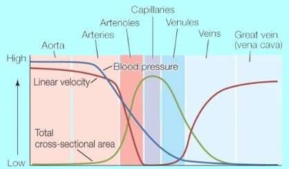
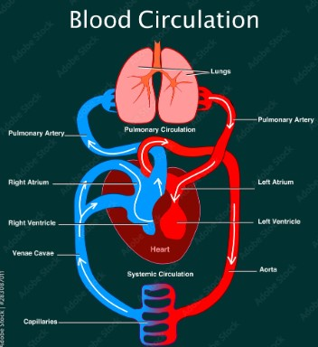
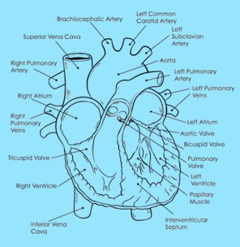

The cardiovascular (or circulatory) system is one of the first body systems to appear in an embryo. The major difference between the circulatory system of an embryo is that the aorta is connected to the pulmonery artery through a small blood vessel called Patend Ductus Arteriosus (PDA for short), that allows blood to bypass the lungs, since they are not functioning yet.
The heart has 4 chambers: 2 atria and 2 ventricles
The atria pump blood to the ventricles and the ventricles pump blood away from the heart. The septum is a wall between the Left atria and ventricle and the Right atria and ventricle.
The right atria recieves de oxygenated blood and sends it to the right ventricle which in turn sends it to the lungs. The lungs oxygenate the blood which goes to the left atria. The L-atria pumps it to the L-ventricle and the L-ventricle sends it to the rest of the body, as shown in the image below.

To prevent regurgitation, the heart has valves after every chamber. These valves allow blood to flow in one direction only. There are 4 valves, 3 of which have 3 cusps and 1 has 2.

They are divided in
- Atrioventricular valves: between atria and ventricles, Tricuspid and Mitral
- Semilunar valves: after ventricels, Pulmonary and Aortic
Arteries carry oxygen-rich blood away from the heart to the body tissues.
They have thick elastic walls to withstand high pressure from the heart's pumping action.
Most of the times, they carry oxygen-poor blood back to the right atrium, in order to be sent to the lungs.
The exception is the pulmonary vein, that carries oxygen-rich blood to the left atrium in order to be delivered to the rest of the body.
Typically veins are thinner than arteries.

Capillaries are tiny blood vessels where exchange of gases, nutrients, and waste occurs between blood and tissues.
Their thin walls allow for this exchange to happen efficiently.
Blood is a fluid connective tissue that contains red blood cells, white blood cells, platelets, and plasma.
It transports oxygen, carbon dioxide, nutrients, hormones, and waste products.
Humans have a double circulatory system:
- Pulmonary Circulation: Between heart and lungs.
- Systemic Circulation: Between heart and rest of the body.
This ensures efficient oxygenation of blood and nutrient delivery to tissues.